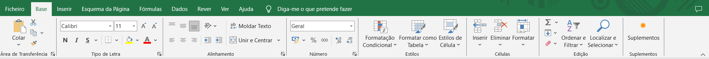

Abrir o Excel através do menu iniciar

Esta é a página inicial do Excel
Criar um Livro:
Aqui podemos escolher entre varias opções; entre elas criar uma folha em branco ou fazer um tour pela aplicação.
Salvar um Livro:
Ao clicar em Browse (Explorar) podemos selecionar um local expecifico, como uma pasta, onde queremos guardar o nosso livro.
Abrir um Livro:
Ao clicar em Browse (Explorar) podemos selecionar um local expecifico, como uma pasta, onde está guardada o nosso livro.
Por fim temos uma Folha de Calculo em branco do Excel
Este é menu Base

Semelhante ao Word, aqui podemos encontrar as funções de mudar o tipo de letra e o tamanho.
Também é possível colocar o texto em Negrito (N), Itálico (I) e Sublinhado
Além disso podemos definir as bordas de uma tabela

Aqui temos as funções de Alinhar à esquerda, Centralizar, Alinhar à direita e Justificar.
Assim como alinhar em cima, em baixo e ao centro o texto de uma célula.
Também temos a função de unir células.
Este é o menu Inserir

Nesta aba podemos adicionar uma tabela do tamanho desejado ou importar uma tabela Exel.

Nesta secção podemos adicionar imagens salvas no dispositivo.
Assim como adicionar formas, icons e gráficos.

Nesta secção podemos adicionar caixa de texto, cabeçalho e rodapé, WordArt (estilos de letra), número de slide e equações e simbolos.

Aqui pode ser importado um vídeo ou um audio.
Este é o menu Layout (Estrutura)
Neste menu encontramos uma variedade de templates predefinidos para usar nas apresentações.
Também é possivel procurar online por mais templates.
Este é o menu de Transições
As transições são efeitos de transição entre os slides, que ajudam a suavizar a progressão da apresentação.

Neste menu podemos alterar a direção da transição (de baixo para cima, da esquerda para a direita, etc.).

Também é possivel adicionar sons e mudar a duração da transição.
Assim como definir um tempo antes da transição ser executada.
Este é o menu de Animações

As animações são efeitos visuais que podem ser aplicados a elementos individuais nos slides, como texto, imagens e gráficos.

Este menu contem diversas animaçãoes diferentes para deixar a apresentação mais dinâmica.

Neste menu podemos alterar a direção da animação (de baixo para cima, da esquerda para a direita, etc.).